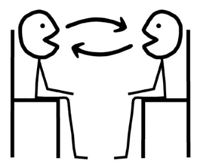

Feedback
By ZhangLin
2016/01/27
Feedback?
how we are doing in our efforts to reach our goal.
Effective Feedback:
specific information around actions taken to reach a given goal.
Type of Feedbacks
+ focuses on the positive aspects of one’s behavior.
- indicates behaviors to work on and do better.
3 Dev
A 是刚进组两个月新人，没有的项目上下文。
在和 B pair时拿新story不停地问不懂的地方，认为发现因为自己问了大量项目上下文导致完成story进度很慢。
之后在和C pair时不懂得地方先记下来，自己下来问了别的人或者自己查阅资料解决。
一个月后在A 的interview++中有了不一样的声音，B说A这孩子勤奋好学，不懂就问，很不错。
C 说恰恰相反，我在和他pair时我肯定他不知道的地方他都不问，我专门反过来问他，他才说不知道。
1 技术大牛, 2 Dev
D 是公司技术大牛，技术过硬，但缺点就是骄傲，pair时不够认真。
今天是D和E pair的第一天，在分析story时D认为这么简单的卡，最多一天就可以完成。并且在pair时很漫不经心，大部分时间在低头玩手机。当E遇到问他需要商讨时D也总是敷衍了事。
switch pair后D 和 F 进行pair,D同样的说话高傲，漫不经心。于是F 就当着全组人面对D 说，你能不能好好做story。
D 比较郁闷，自己一直是这样的，为什么只有F 这样认为？其他人呢？于是他也当着所有人的面问大家，我哪里做的不好吗？全场尴尬僵硬中。
更多场景……
Let us start face to face feedback.....
Round 1

Round 2
Round 3
Round 4
Round 5
Round 6
Round 7
Round 8
Round 9